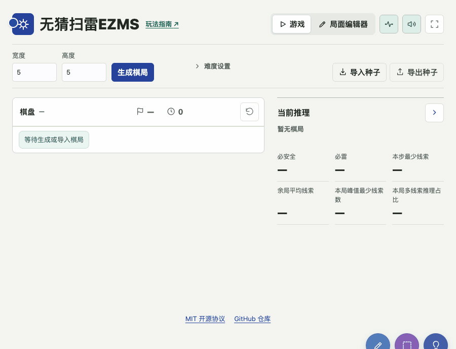
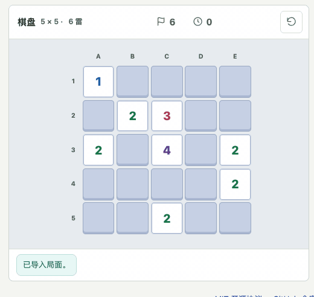
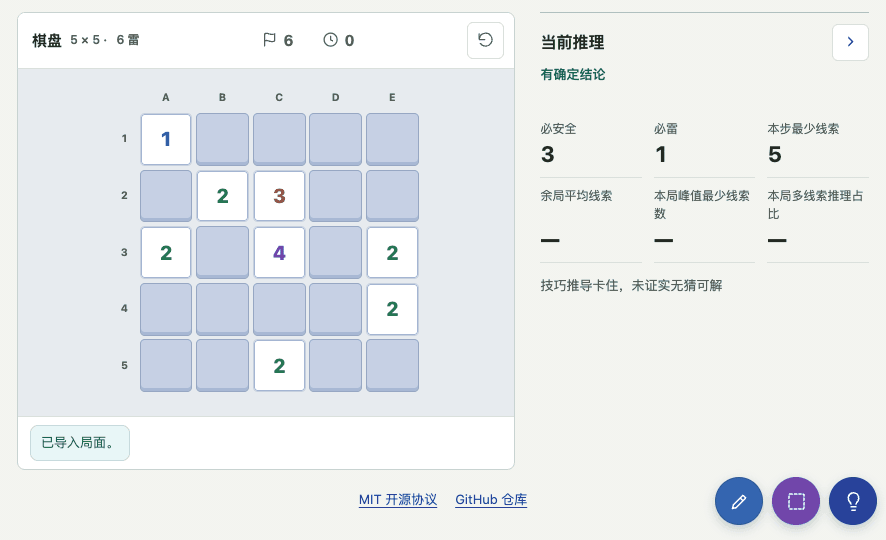

玩法指南
从数字和总雷数推理，标齐本轮的必雷和必安全格，再一起开格、插旗。
开始一局
在游戏页填入棋盘的宽度和高度，点击「生成棋局」。默认是 5 × 5，雷数由游戏生成，开局后，棋盘上方的尺寸旁会显示总雷数。
展开「难度设置」可以指定三项下限，留空使用默认值。游戏用一条经过验证的无猜通关解法评估棋局，逐步计算得出结论最少需要几条线索。已开格的数字和公开总雷数都可以作为线索。
- 平均最少线索下限 默认 1.5
- 把每一步所需的最少线索数取平均。设为 1.5，整局平均至少要达到 1.5 条。
- 多线索步骤占比下限 默认 8%
- 最少需要 3 条或更多线索的步骤，占整条解法的比例。
- 峰值线索数下限 默认 5
- 取所有步骤所需的最少线索数中的最大值。设为 5，至少有一步需要 5 条或更多线索。
下限越高，满足条件的棋局可能越难生成。搜索中出现候选时，可以查看未达到的指标，再选择「停止并采用候选」。

无猜玩法
每个数字表示周围八格中有几颗雷。游戏生成的棋局可以全程靠推理通关。只要某格在所有符合公开线索的雷图中都有雷，就能确认它是必雷。每张雷图里都没有雷的格子，则是必安全。
- 确认格子。点按未开格确认安全，右键确认雷。也可以从已开的数字上拖出旗子，放到必雷格。旗子会显示在鼠标或手指的左上方，松手时以鼠标或手指所在的格子为准。手机推导分屏里，先在数字上按住再拖。
- 标齐本轮。找出当前局面所有必雷和必安全格。标错会在对应格提示，进度不变，也不会输。
- 提交并继续。完成棋盘下方的本轮进度后，点「开格并插旗」。安全格会打开，必雷格会正式插旗，再根据新出现的数字继续推理。
点击数字，批量确认邻格
如果一个数字周围的剩余雷数等于尚未确认的邻格数，点这个数字就会补上红叉。如果剩余雷数为 0，则会给剩下的邻格补上红色安全线。已插旗和红叉都计作雷，红色安全线计作安全。右键点数字只尝试补红叉。

红色标记
红色 X
已确认是雷，提交后插旗。
红色横线
已确认安全，提交后开格。
红标计入本轮确认进度。提交前，可以使用棋盘上方的撤销、重做按钮调整。

假设记号
点开右下角的蓝笔，选记号后点按格子，或按住扫过多个格子。拟定表示先假定某格是雷或安全。拟推表示根据这些假设推出的结论。蓝色记号用于记录推理，不计入本轮确认进度。
| 层级 | 拟定为雷 | 拟推为雷 | 拟定安全 | 拟推安全 |
|---|---|---|---|---|
| 第一层 | x | o | s | / |
| 第二层 | v | ʌ | e | // |
| 第三层 | v3 | ʌ3 | e3 | //3 |
第二层是在第一层的假设上再加一层，第三层是在第二层上继续加一层。短按 +、− 调整新增的高层记号，棋盘上已有的记号保留原层级。第三层及以上用下标显示层数。
- 长按 +
- 用各层蓝标取交集，再清空普通蓝标。棋盘没有绿标时，把当前蓝标记为绿色。已有绿标时，同格同向就保留，反向就清除，没写蓝标的格子保持原样。原来没有绿标的格子也保持原样。
- 长按 −
- 画笔设在第二层时，清除第二层的拟推记号。设在更高层时，清除棋盘上最高层的拟推记号。拟定记号会保留。
- 长按蓝笔
- 先清空所有普通蓝标。在没有普通蓝标时，再长按一次即可清空绿色记号。
绿色小圆圈
交集留下的雷记号。
绿色小斜杠
交集留下的安全记号。
绿标可以保留到下一次假设，仍属于推理笔记。退出画笔后，可按无猜玩法确认格子。

选区与公式
点开右下角的虚线方框，选择「增加选区」或「减去选区」。点未确认格可增减单格，点数字可增减它周围尚未确定的格子。点行号、列名或左上角的 ↘，可对整行、整列或全盘执行相同操作。
每次增加使选中格的系数加 1，每次减去使它减 1。重叠的部分按格相加。紫色表示正系数，黄色表示负系数。系数绝对值越大，颜色越深，系数为 0 时高亮消失。
读懂棋盘下方的两行
- 「选区」显示带正负号的区域表达式。
A1:B2表示从 A1 到 B2 的矩形，表达式也可以用数字邻域或单格表示。鼠标悬停在某一项上可查看对应格子。 - 「=」显示公开数字、总雷数和已确认标记允许的所有加权雷数。每颗雷按它所在格子的系数计入，安全格贡献 0。单个值表示总和已经确定，逗号分开的多个值表示这些结果都可能出现。
2 × A1 − B1
例如给 A1 加两次、给 B1 减一次。如果 A1 是雷且 B1 安全，这种雷图的加权雷数为 2。如果两格都是雷，则为 1。
清空选区。长按虚线方框主按钮。也可以使用选区菜单里的撤销、重做。收起菜单会保留选区预览。
提示工具
点开右下角的灯泡，选择「显示线索」可高亮下一步用到的数字或总雷数，选择「显示推导」可查看公式和推理过程。「答案」会标出当前局面所有必雷与必安全格。
「求解一步」会确认一组结论，标齐后再点可提交整轮。「自动求解」会依次确认并提交。
关闭提示。长按灯泡主按钮，可关闭当前线索、推导和答案显示，并收起提示菜单。